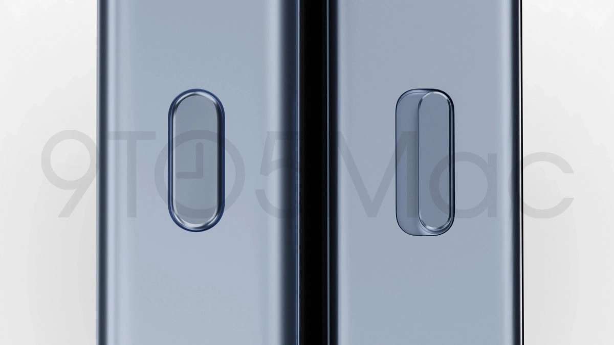

Apple, iPhone 15 Pro ailesinin dayanıklılığını artırıyor! İşte detaylar
“i9to5Mac tarafından yayınlanan rapora göre Apple, iPhone 15 Pro ailesinde fiziksel tuş yerine Taptic Engine kullanacak.?.

Geçtiğimiz aylarda teknik özellikleri sızdırılan iPhone 15 Pro ve Pro Max modelleri, yeni bir iddia ile gündeme geldi. 9to5Mac tarafından yayınlanan rapora göre Apple, iPhone 15 Pro ailesinde fiziksel tuş yerine Taptic Engine kullanacak.
iPhone 15 Pro ve Pro Max modelleri Taptic Engine ile gelecek
iPhone 15 Pro modellerinin TSMC’nin yeni nesil 3nm teknolojisi üzerine inşa edilmiş bir A serisi çipe sahip ilk modeller olması bekleniyor. 3nm çip teknolojisinin işlem performansını yüzde 10 ila 15 oranında artıracağı ve aynı zamanda güç tüketimini yüzde 35’e kadar azaltacağı tahmin ediliyor. A17 Bionic işlemcilerin sadece iPhone 15 Pro ve Pro Max modellerinde kullanılacağını belirtmekte fayda var.
Apple, dört modelde de dinamik ada ile karşımıza çıkacak. Pro modellerinde titanyum çerçeve kullanacağı belirtilen şirket, iPhone 15 serisinde Type-C teknolojisine yer verecek. iPhone 15 Pro ve Pro Max modellerinde ses açma/kapama tuşu yerine Taptic Engine teknolojisine sahip olacak. Yapılan değişikliğin cihazlardaki suya dayanıklılığı artıracağı belirtiliyor.